從板凳最末端到先發五人 · 劇情分鏡生圖、全角色錨點立繪與生片工作流整合門戶
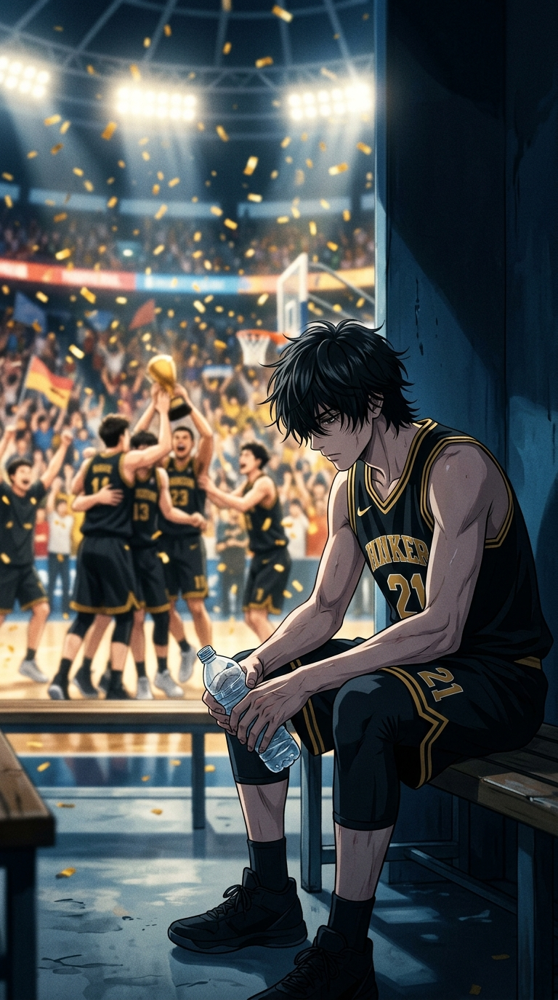
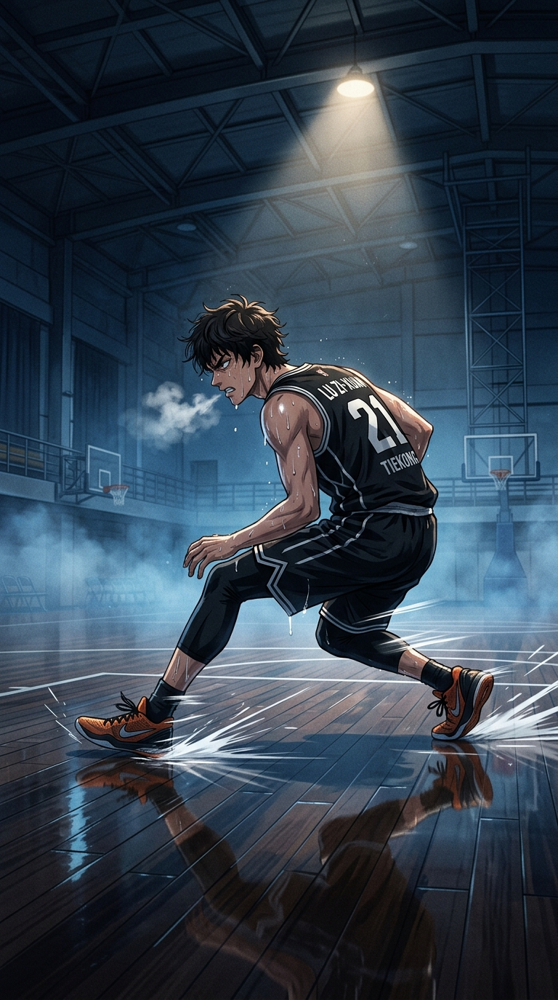
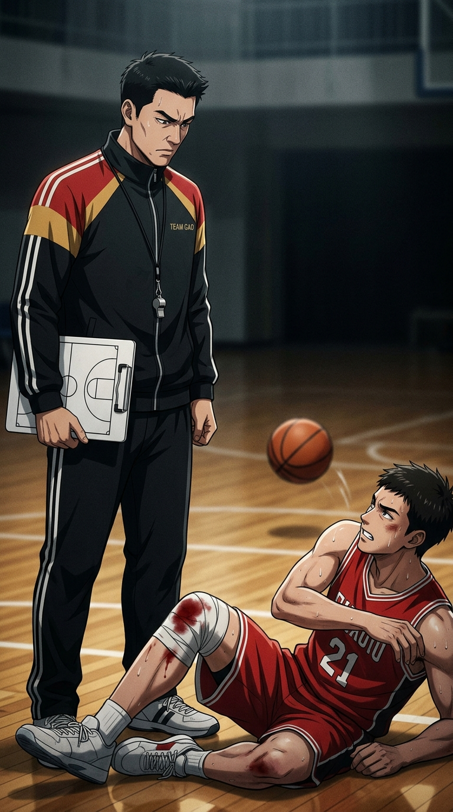
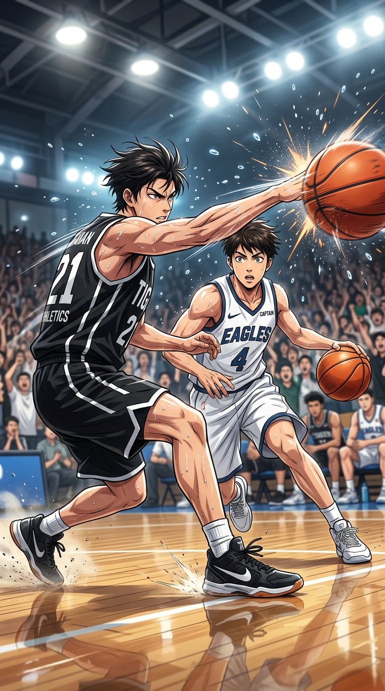
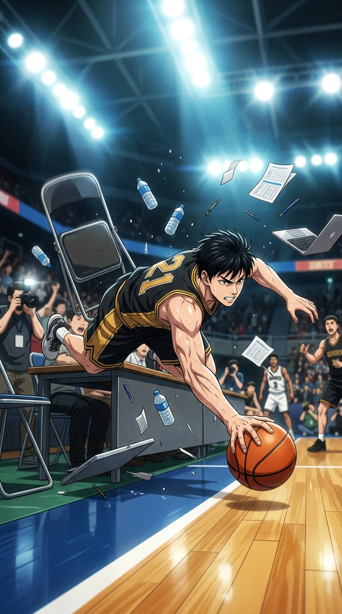
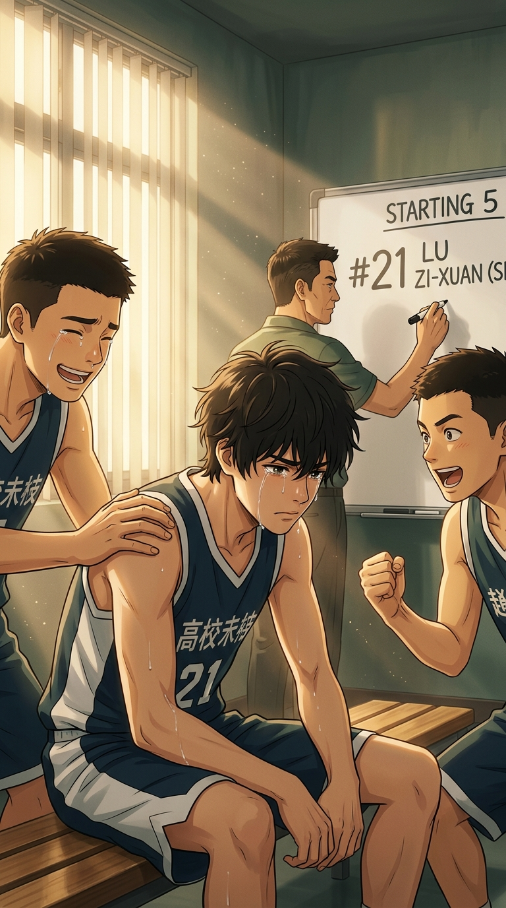
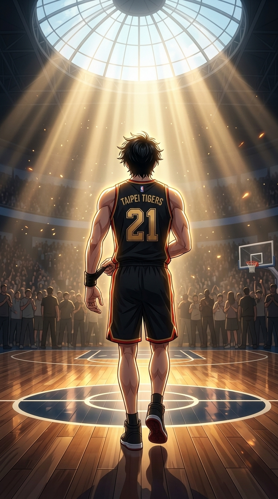
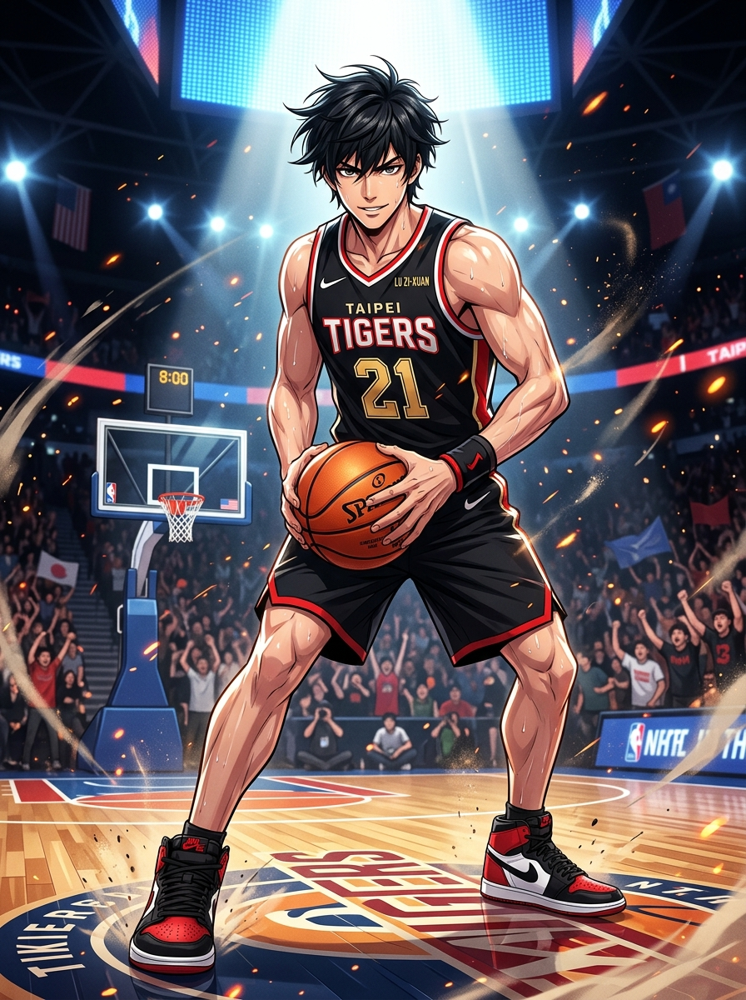
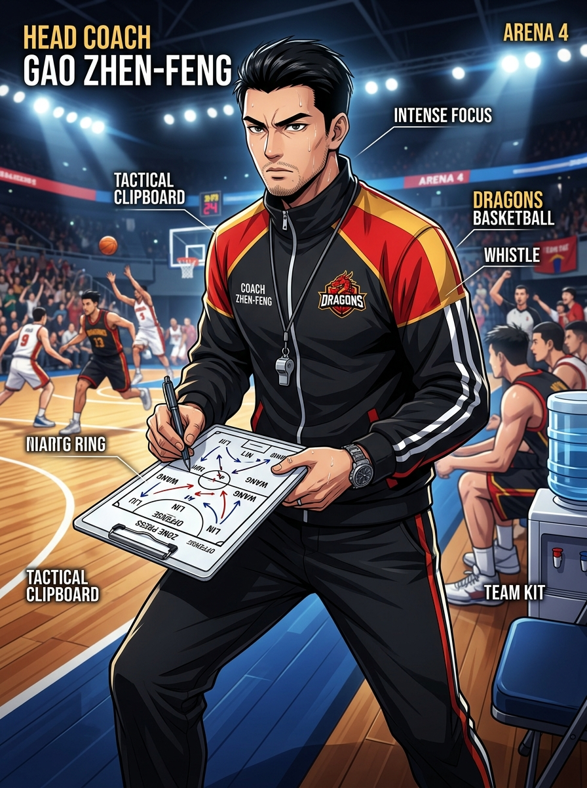
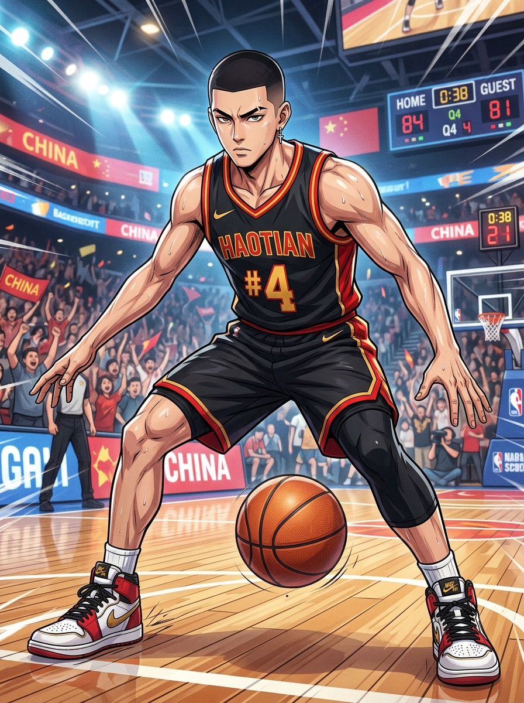
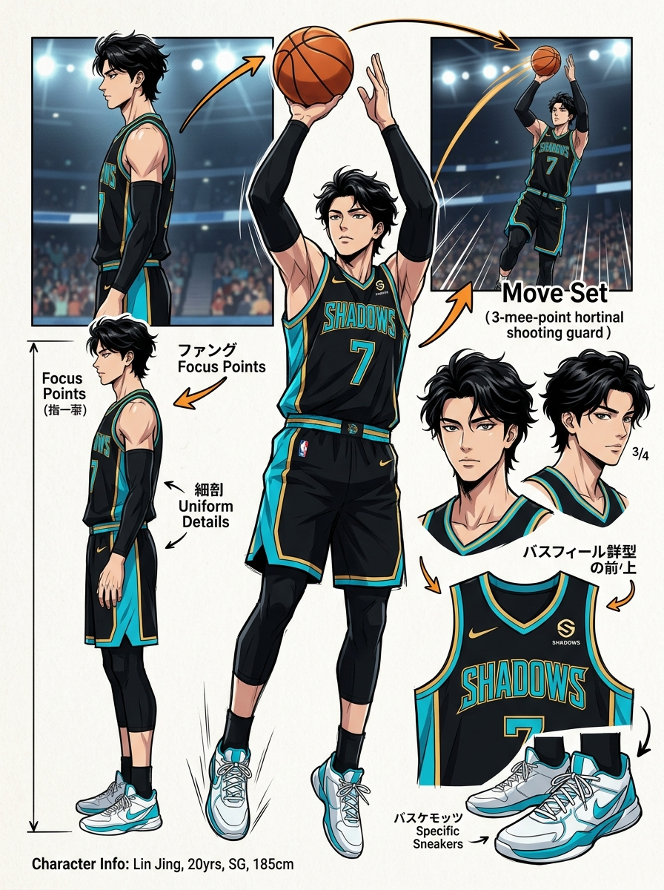
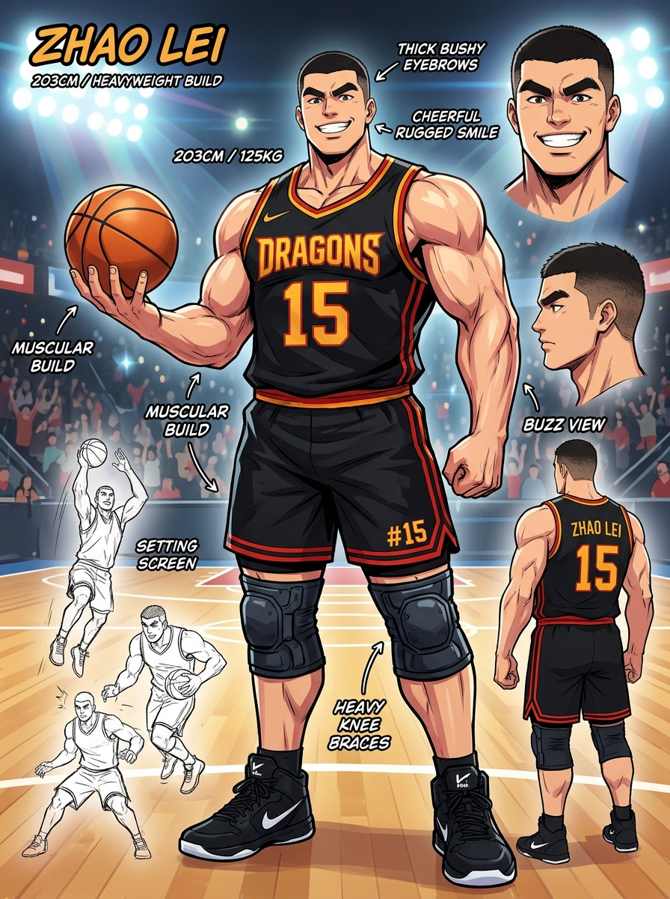
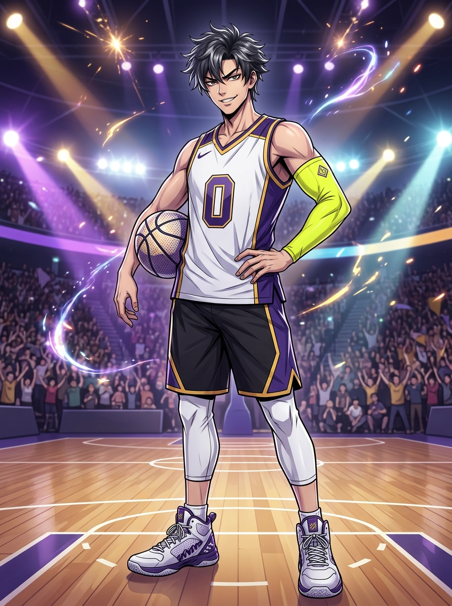
體育館上空噴灑出滿天金色的彩帶。哨聲長鳴，全場爆發出震耳欲聾的歡呼。隊友們在球場中央相擁、咆哮、拋灑汗水，享受著聚光燈與觀眾席上浪潮般的掌聲。而在替補席最邊緣的角落，陸子軒正默默彎下腰，把隊友隨手扔在腳邊的空水瓶一個個拾起，整齊地裝進塑膠袋裡。他穿著一身潔白、沒有一絲摺痕的熱身外套。胸前印著球隊的隊徽，背後是那個彷彿被遺忘的號碼——21號。整整四十分鐘的比賽，他一秒鐘都沒有上過場。「那一年的全場歡呼……我連一滴汗，都沒資格流。」陸子軒看著自己乾淨平整的球鞋鞋底，指關節因為用力握著水瓶而微微泛白。但他抬起頭時，那雙清瘦俊朗的眉宇間沒有自怨自艾，只有深不見底的火光。「但我不是來這裡……當一輩子觀眾的。」
整座城市還在沉睡。凌晨五點半，初春的寒氣化作白濛濛的薄霧，籠罩在老舊室內球館的鐵捲門外。鑰匙轉動的清脆聲響劃破寂靜。緊接著，是皮球重重砸在拋光木地板上的悶響——砰！砰！砰！球鞋在乾澀的地面上發出尖銳刺耳的急停磨擦聲。汗水沿著陸子軒凌亂的黑髮碎蓋滑落，滴在眼眶邊，刺得生疼，但他連眨都不眨一眼。每天五百次定點跳投，二十組端線折返全速衝刺。加壓褲包裹著的膝蓋早已在劇烈顫抖，胸膛像拉風箱一樣劇烈起伏。「停下。」一道低沉冰冷的聲音突然從球館陰影處傳來。總教練高振峰手裡捏著哨子與戰術板，眼神如獵鷹般銳利。「攻我一次。進了，下一場讓你進輪替名單。」陸子軒降低重心變向突破後撤步出手，然而高教練如鋼鐵般的大火鍋狠狠扇飛了籃球，將子軒擊摔在地。高教練冷冷說道：「腳步浮誇，出手猶豫！球隊裡最不缺的，就是自以為是的得分手！滾回去遞水！」
趴在冰冷的地板上，手肘與膝蓋滲出血絲。陸子軒手指抓著地板，眼眶微紅。但在經歷了短暫的自嘲後，他的眼神化為冰冷的野性。「手感會失準，戰術會被看破，進攻會背叛你……但有一種東西，只要心臟還在跳、肺泡還在呼吸，就永遠不會背叛——那是把對手咬死在半場的骨氣，與哪怕撞得粉身碎骨也不退後一步的防守！」從那天起，陸子軒的訓練徹底瘋魔了。當隊友在練華麗的三分與暴扣時，他在球場底線一遍又一遍練習滑步防守、抗擊打深蹲、極限撲球。隊長陳浩天和中鋒趙磊提早來到球館，看見那個身影如饑餓野獸般在地板上不知疲倦地翻滾撕咬。浩天低聲道：「他要的不是得分數據，他是想成為那堵所有人都繞不過去的牆。」
全國八強生死戰，對手是奪冠大熱門「烈風隊」，擁有聯賽最狂傲的得分王——雷震。比賽進行到第四節剩下六分鐘，記分牌上落後整整 14 分。防守球員五犯離場，板凳席死寂。暫停哨響，高教練猛地轉頭射向替補席角落：「陸子軒！把外套脫了！上去，給我像條瘋狗一樣鎖死雷震——至死方休！」陸子軒一把扯掉熱身服，露出黑底紅金「21」號戰袍，全場震驚：「21號是誰？」沒有人知道他是誰，但他踏上球場的腳步堅定無比！
雷震面對陸子軒窒息的死亡纏繞，連番受挫。比賽最後十五秒，分差追至 1 分。雷震強行後仰跳投，球砸框彈飛，朝邊線滾去——出界比賽就結束了！然而一道黑色身影完全無視邊線外的技術台擋板，以完全水平姿態魚躍飛了出去！「球在哪裡，命就在哪裡！！」在撞上護欄前一瞬，陸子軒單手把球狠狠撈回場內！砰！他撞翻了技術台的金屬椅與擋板，水瓶紙張四濺！與此同時，陳浩天接球快攻壓哨暴扣！嘟——！！絕殺逆轉！84 比 83！全場海嘯般狂呼：「二十一號！二十一號！」
隔天清晨更衣室，高教練在白板上用黑筆寫下了下一場四強賽的先發名單：SF · 陸子軒 #21。破曉的第一縷晨光穿透百葉窗，灑在21號球衣上。子軒繫緊護腕，邁向球場中圈。「從板凳最末端走到球場中央，只有十公尺。但我，走了整整三百六十五個黎明！」
本專案各項短影片配置、分鏡向量圖、字幕與 API 任務檔案均已就位：